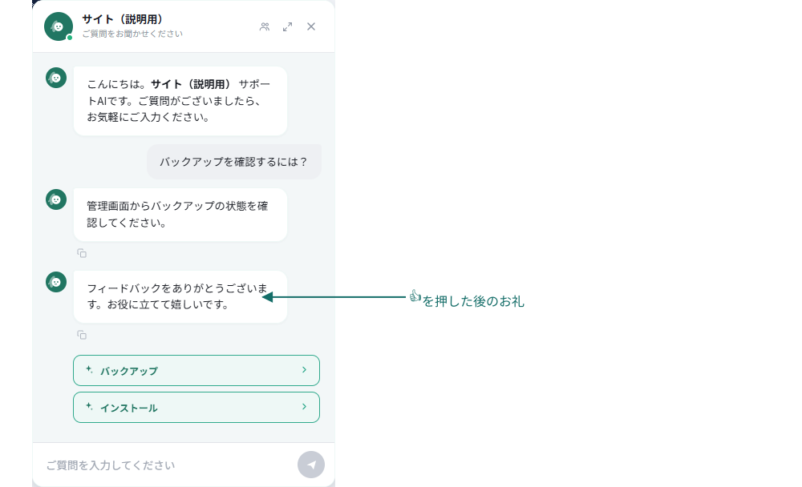
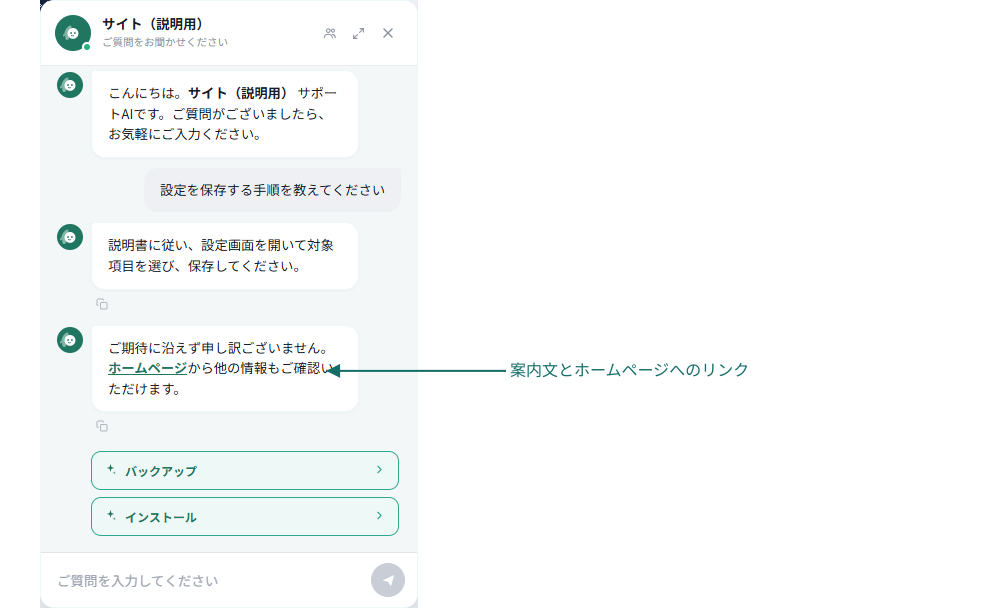

チャットを開いて質問する
ウィジェット確認、またはサイトのチャットアイコンを開く → 挨拶・質問候補・入力欄を表示。

質問を入力 → Enter／送信 → 送信文を表示 → AIが入力中… → 回答を待つ。

FAQからの回答
適切なFAQを取得 → 登録済みの回答とFAQ画像（ある場合）を質問の下に表示。

1件のFAQに直接一致 → その回答を返す。FAQの選択が必要な場合 → AIが選択を補助。登録済みの回答文は書き直しません。
資料を使ったAIの回答
適切なFAQがない → 承認済み資料の関連文を検索 → Ollamaが回答を作成 → チャットに表示。

情報が足りない場合
情報不足 → 質問の補足や問い合わせを案内 → リンクから問い合わせ先を開く。

続けて質問する・チャットを閉じる
同じ会話では続けて質問できます。前の回答に複数の話題がある場合は、質問の対象を明記してください。拡大ボタンで表示を広げ、コピーボタンで回答をコピーできます。
閉じるを押すと表示中の会話を終了します。再度開くかページを再読込すると、新しい会話が始まります。続きの質問でも話題を明記してください。
回答の評価ボタン
役に立った（👍） → その回答の2つの評価ボタンを非表示 → お礼を表示。

役に立たなかった（👎） → 2つのボタンを非表示 → 案内を表示 → ホームページ → サイトのトップを開く。

評価ボタン（👍／👎）を押すと、回答の表示が変わります。